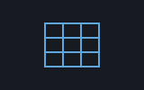

A reckoner seed: matrix, converting at the bridge — machines/seeds/seedmatrix.shoddy

seedmatrix bridges matrix:
MAT IDENT TRANSP MMUL MATADD MGET DOT. There is no
Array cell at the keyboard: every vector-taking word here
accepts a LIST and converts internally, and every
vector-returning word answers a LIST back — one collection
type at the keyboard. MMUL and MATADD reuse
cuttle's own CutMatMul and
CutMatAdd, which already pre-flight the same dimension checks
matrix.shoddy Errors on — the same
guard the engine core's polymorphic * and + apply
to a matrix mismatch reached through them.
Named MATADD, not MADD. A
dictionary cannot hold two entries under one name, and matrix.shoddy's own
error text already reads "MATADD: DIMENSION MISMATCH" — settling the name
here in matrix's favour and leaving seedmoney's
MADD as the one un-renamed.
Bounds checking that would otherwise be a matrix-indexing
Error is done once, at the bridge: MGET checks
both the row and the column against the matrix's own shape before either
reaches the flat array underneath, and DOT checks the two
lists are the same length before either becomes an array Dot could run
past the end of.
Let st0 = RckSeedMatrix(RckNew())
RckEval(st0, "2 2 { 1 2 3 4 } MAT") ' x: 2x2 { { 1 2 } { 3 4 } }
RckEval(st0, "TRANSP") ' x: 2x2 { { 1 3 } { 2 4 } }
RckEval(st0, "3 IDENT") ' x: 3x3 identity
RckEval(st0, "{ 1 2 3 } { 4 5 6 } DOT") ' x: 32| Word | Description |
|---|---|
| MAT ( r c list -- matrix ) | An r by c matrix from a list of r*c numbers, row by row; refuses r or c below one, or a list of the wrong length. |
| IDENT ( n -- matrix ) | The n by n identity matrix; refuses n below one. |
| TRANSP ( matrix -- matrix ) | The matrix flipped across its diagonal. |
| MMUL ( a b -- ab ) | Matrix product; the columns of a must match the rows of b. |
| MATADD ( a b -- a+b ) | Two matrices of one shape, added cell by cell. |
| MGET ( matrix r c -- x ) | The cell at row r, column c, both 1-based; refuses either index out of the matrix's shape. |
| DOT ( xs ys -- d ) | The dot product of two lists of numbers of the same length; refuses mismatched lengths. |
| User | How | |
|---|---|---|
| halifax | Matrices as cells, multiplied with the same * that multiplies two numbers. | |
| sparky | Sparky folds it too, so a model calling eval reaches the same words halifax puts at a prompt. |
A mill claims this seed by folding RckSeedMatrix over its reckoner
state, which is all halifax does.
| Machine | Why | |
|---|---|---|
| cuttle | The CutMat case, and CutMatAdd/CutMatMul for the pre-flighted dimension checks MATADD and MMUL reuse. | |
| matrix | The domain this seed bridges: Mat, Ident, Transp, MatGet, Rows and Cols. | |
| reckoner | RckReg, RckSeeding and the argument readers every registered word is built from. | |
| seq | List plumbing under the LIST-of-NUMBER reader MAT and DOT share. |